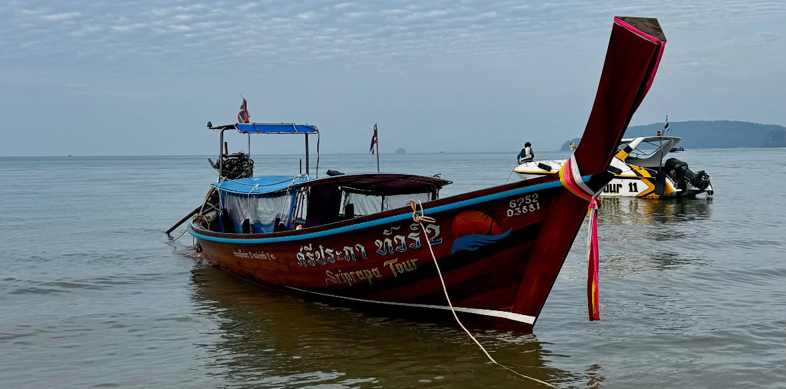

Thailands Islands
Phuket and the surrounding islands of Thailand are renowned for their stunning beaches, crystal-clear waters, and vibrant marine life. Whether you're seeking relaxation on pristine shores or thrilling water activities, the islands offer something for every traveler. Popular islands such as Koh Phi Phi, and Koh Samui provide a mix of lively nightlife, luxurious resorts, and serene natural beauty. Don't miss the opportunity to explore the underwater world through snorkeling or diving, where you can encounter colorful coral reefs and diverse sea creatures.
The islands also offer a range of outdoor activities, including hiking through lush jungles, kayaking around limestone cliffs, and island-hopping tours to discover hidden beaches and secluded coves. When you visit Phuket and the islands, keep an eye out for the local wildlife, including playful monkeys, exotic reptiles, and vibrant marine species.
Must See
Some must-see attractions in Phuket and the surrounding islands include:
- Maya Bay: a part of most island longtail boat tours on departing from Koh Phi Phi, this stunning beach is a must visit for its turquoise waters and white sandy shores.
- Diving in Koh Tao: Known for its vibrant coral reefs and diverse marine life, Koh Tao is a top destination for scuba diving enthusiasts, and is a great spot to get certified.
- Yona Beach Club: a popular floating beach club for tourists looking to relax and enjoy good food and drinks by the sea.
- Visit Krabi: Explore the beautiful beaches, main shopping street, and night market. If you're feeling adventurous, check out monkey trail.
- Catch a fire show: Experience the thrilling fire performances that are a popular evening entertainment option on many of the islands.
Tutor Tips
Thailand Travel Tutor Tips to help you plan and create your own memories in Thailand.
When planning a trip to the islands, it is important to consider the time of year you are traveling. The best time to visit the islands is during the dry season, which runs from November to April. During this time, you can expect sunny skies and calm seas, making it perfect for beach activities and water sports. However, this is also the peak tourist season, so be prepared for larger crowds and higher prices. If you prefer a quieter experience, consider visiting during the shoulder season (May to October), when the weather is still pleasant, but there are fewer tourists.
No matter the island you are on, bring a lot of water each day while you adventure around and most activities are outdoors in the water. It is very easy to forget your thirst.
Do not carry your water or other belongings in a plastic bag. The wild monkeys can be pretty aggressive and on the trails they love to steal grocery bags from tourists because these bags usually have food. Pack a day bag for your trip. There are many companies that sell pocket backpacks that can compress down and pack into itself so they take up a very small portion of your limited space while traveling. Click HERE for a link to the one I use.
What Island is best for your itinerary?
A variety of islands are available to visit while in Thailand, each offering unique experiences and attractions. Here is a comparison of some popular islands to help you decide which one suits your travel preferences and budget:
| Island Name | Best Known For | Main Attraction | Price |
|---|---|---|---|
| Koh Phi Phi | Longtail Boat tours, snorkeling, diving, and beach parties | Maya Bay | $$ |
| Koh Samui | Beautiful beaches, luxury resorts, nightlife, and temples | Big Buddha Temple | $$$ |
| Koh Tao | Scuba diving courses for all levels, and various diving boat tours | Cheap dive certifications | $ |
| Koh Lipe | Crystal clear waters, coral reefs, and vibrant marine life ("Maldives of Thailand") | Sunrise and sunset Beaches | $$ |